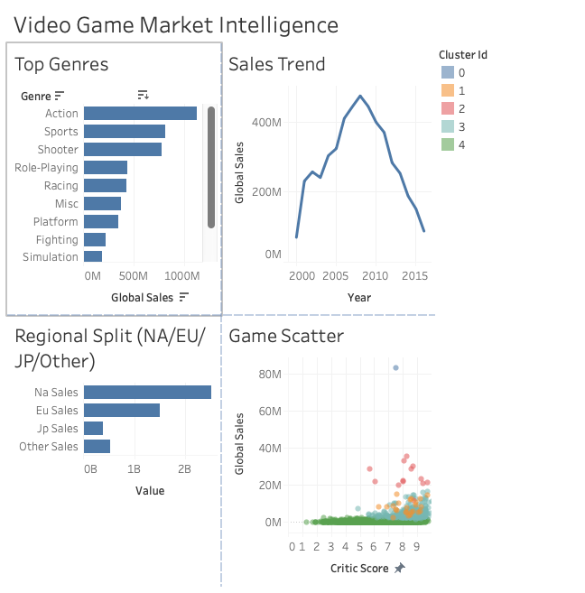

Adi Gudi
Software · Data · ML — San Diego, CA

I'm a computer scientist (UC San Diego, '25) less interested in technology for its own sake than in what it lets you decide. I like working at the intersection of engineering and another field — finance, product, operations — using data to drive real business decisions rather than ship features in a vacuum. I'm looking for software, data, or ML roles where the job is turning messy data into choices people actually act on.
Selected Work

17 years of sales data through a 14-step ETL and a custom C++ ML pipeline, answering where a publisher should actually launch. Python · C++17 · FastAPI · Streamlit.
Clustering 17 years of game sales into five market segments to recommend a launch region and genre. UCSD MGT 151.
Owned the ML and sensor pipeline turning raw Arduino streams into usable field readings. UCSD Design Lab.
Benchmarked PPO, TD3, TRPO, and SAC on OpenAI Gym, comparing convergence and sample efficiency. UCSD ACM AI.
Experience
Built a Python + OpenAI pipeline pulling financial metrics for 500+ companies, saving analysts ~8 hours a day; shipped a revenue-forecasting tool on FinMind + FRED.
LLM pipeline extracting structured metadata from scientific publications, replacing a manual categorization workflow.
Unsupervised ML clustering hyperspectral microscope imagery into compound-level groupings, wrapped in a PyQt GUI for non-coders.